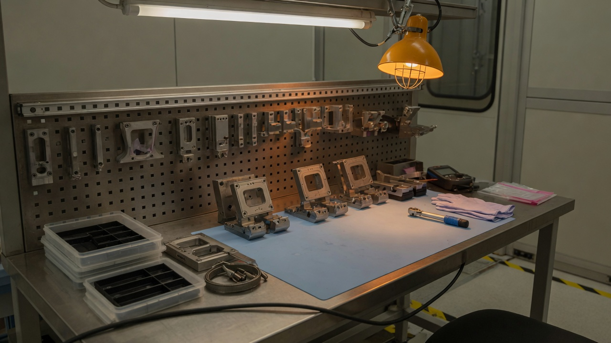

Policy
The SEC proposed a path for crypto custody
Advisers and funds would get a custody rule written for crypto assets. Self-custody is only “under certain circumstances.” The comment clock starts at the Federal Register.
Advisers and funds would get a custody rule written for crypto assets. Self-custody is only “under certain circumstances.” The comment clock starts at the Federal Register.

NVIDIA says the mode is up to 8x faster than Astra Standard on token generation. That comparison is theirs. Price sits on OpenAI’s guide.

On September 28 NVIDIA posted that OpenShell enforces permissions, and that a BlueField chip can watch the agent from outside the software it runs in.

WordPress, Apple, and Cisco SD-WAN Manager landed on the known-exploited list in five days. The catalog, not the post, holds the due date.
The September forecast is $2.7 trillion, up 49.5%. About 56% of the table is infrastructure. The check a company signs is the feature inside software it already owns.

Gartner says 54% of organizations do not limit what an AI agent can touch, and 51% have not started post-quantum work.

Transparency has applied since August 2. Stand-alone high-risk duties wait until December 2, 2027.

CISA’s July revision of the SBOM minimum elements applies to SaaS and AI software, not only to code you compile.

Form 8-K gives a public company four business days after the materiality call, not after the first alert.

Gartner’s May figure was $2.59 trillion. McKinsey still finds only a minority of firms attributing EBIT to it. Updated for the September revision.
BIS opened a case-by-case window for H200-class chips. Korea tightened AI-chip exports on Sept. 1.
Swiss Re puts 2026 global cyber premium at $16.4 billion with rates still down. The application still wants MFA.

The stack is no longer an IT catalog. It is how the company actually runs — and most firms still buy it like office supplies.
Data residency, audit trails, and model clauses are no longer legal footnotes. They are packaging.

Tools landed in every department. Output did not. The bottleneck is workflow, not the model.
When public markets froze on multiples, direct lenders stepped in — and started acting like operators.
Policy is written in Washington. The P&L lands on toolmakers, packagers, and the mid-tier vendors nobody briefed.
Underwriters now ask better questions than some boards. The answers are showing up as line items.
Gross margin is no longer a software story. Token costs, evals, and human review decide who scales.
Finance is pulling workloads home. Engineering is discovering that “home” is a product decision, not a protest.
Most decks still sell possibility. Directors need a control framework that survives the next vendor cycle.
Closed-loop purchase data beat the open web. The next fight is over who owns the aisle.
Gartner found that 54% of organizations do not limit agent access, or they let the agent inherit a person’s access.
The 2026 CISA fields, including for SaaS. A logo slide is not an ingredients list.
Transparency since August 2. Marking transition ends December 2. High-risk is a different date.
Four business days from the materiality call. Name who can make it.